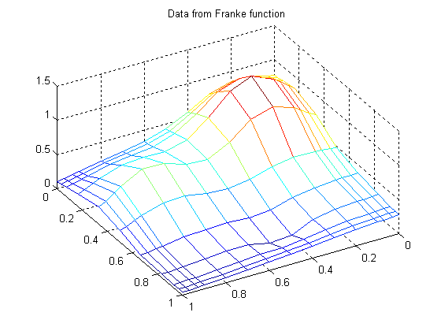
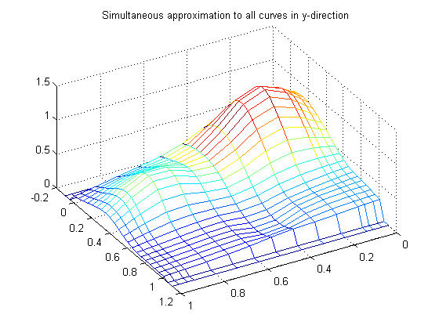
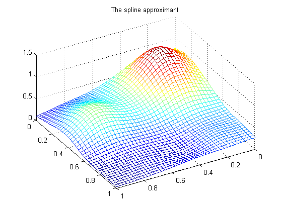
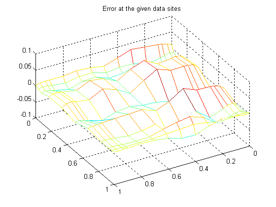
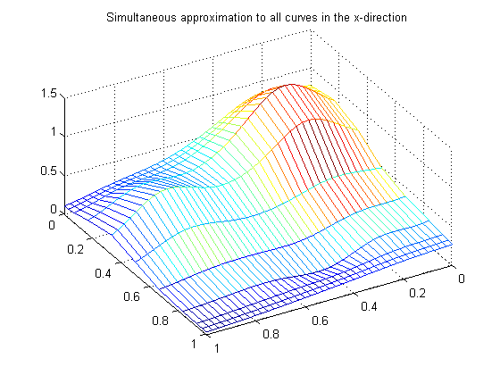
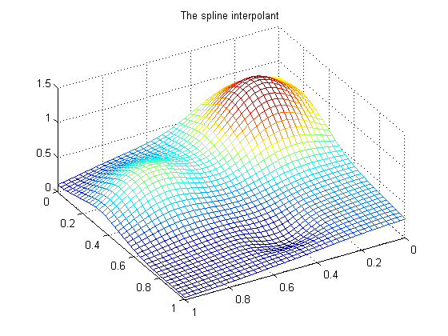
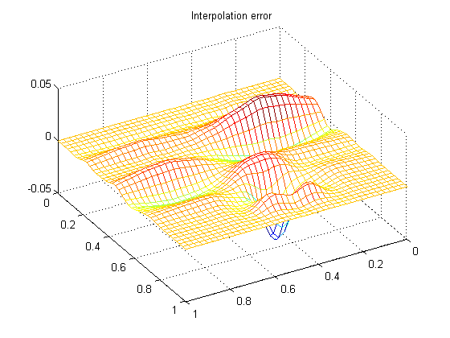

The Tensor Product Construct
Illustrate approximation to data on rectangular grid.
Copyright 1987-2003 C. de Boor and The MathWorks, Inc. $Revision: 1.2 $
Overview
Since the toolbox can handle splines with v e c t o r coefficients, it is easy to implement interpolation or approximation to gridded data by tensor product splines. Most spline construction commands in the toolbox take advantage of this.
However, you might be interested in seeing a detailed description of how approximation to gridded data by tensor products is actually done for bivariate data. This will also come in handy when you need some tensor product constructon not provided by the M-files in this toolbox.
Example: least-squares approximation to gridded data
Consider, for example, least-squares approximation to given data z(i,j) = f(x(i),y(j)), i = 1,...,I, j = 1,...,J . Here are some gridded data, taken from Franke's sample function. Note that I have chosen the grid somewhat denser near the boundary, to help pin down the approximation there.
x = sort([(0:10)/10,.03 .07, .93 .97]); y = sort([(0:6)/6,.03 .07, .93 .97]); [xx,yy] = ndgrid(x,y); z = franke(xx,yy); % NOTE the use of NDGRID in preference to MESHGRID. mesh(x,y,z.'), view(150,50) title('Data from Franke function')
Note that the statement [xx,yy] = ndgrid(x,y); z = franke(xx,yy); used here makes certain that Z(i,j) is the value (of the function being approximated) at the grid point (X(i),Y(j)). However, the MATLAB command MESH(X,Y,Z) takes Z(j,i) as the value at the grid point (X(i),Y(j)). For that reason, the above plot is generated by mesh(x,y,z.') i.e., using the transpose of the matrix Z . Such transposing would not have been necessary, had I used MESHGRID instead of NDGRID. But the resulting Z would not have followed approximation theory standards.
Choice of spline space in y-direction
Next, I choose some knot sequence KNOTSY and spline order KY for the y-direction, and then use the command
sp = spap2(knotsy,ky,y,z);
to obtain, in SP, a spline curve whose i-th component is an approximation to the curve (y,z(i,:)), i=1:I.
ky = 3; knotsy = augknt([0,.25,.5,.75,1],ky); sp = spap2(knotsy,ky,y,z);
In particular,
yy = -.1:.05:1.1; vals = fnval(sp,yy);
provides the array VALS whose entry VALS(i,j) can be taken as an approximation to the value f(X(i),YY(j)) of the underlying function f at the grid point (X(i),YY(j)) . This is evident when we plot VALS using MESH:
yy = -.1:.05:1.1; vals = fnval(sp,yy);
mesh(x,yy,vals.'), view(150,50)
title('Simultaneous approximation to all curves in y-direction')Note that, for each X(i), both the first two and the last two values are zero since both the first two and the last two sites in YY are outside the basic interval for the spline in SP.
Note also the ridges. They confirm that we are plotting here smooth curves in one direction only.
From curves to a surface; choosing a spline space in the x-direction
To get an actual surface, we now have to go one step further. Consider the coefficients COEFSY of the spline in SP, as obtained by coefsy = fnbrk(sp,'c');
Abstractly, you can think of the spline in SP as the vector-valued function y |--> sum_r COEFSY(:,r) B_{r,KY}(y)
with the i-th entry COEFSY(i,r) of the vector coefficient COEFSY(:,r) corresponding to X(i) , i=1:I. This suggests approximating each curve (X, COEFSY(:,r)) by a spline, using the same order KX and the same appropriate knot sequence KNOTSX for every r :
coefsy = fnbrk(sp,'c');
kx = 4; knotsx = augknt(0:.2:1,kx);
sp2 = spap2(knotsx,kx,x,coefsy.');The command sp2 = spap2(knotsx,kx,x,coefsy.'); used here needs, perhaps, an explanation.
Recall that spap2(knots,k,x,fx) treats fx(:,j) as the value at x(j) , i.e., takes each c o l u m n of fx as a data value. Since we wanted to fit the value COEFSY(i,:) at X(i), all i , we have to present SPAP2 with the t r a n s p o s e of COEFSY.
Now consider the transpose COEFS = CXY.' of the coefficient matrix CXY of the resulting spline `curve', as obtained by the command coefs = fnbrk(sp2,'c').';
COEFS provides the b i v a r i a t e spline approximation
(x,y) |--> sum_q sum_r COEFS(q,r) B_{q,KX}(x) B_{r,KY}(y)
to the original data
(X(i),Y(j)) |--> f(X(i),Y(j)) = Z(i,j) .
We use SPCOL to provide the values B_{q,KX}(XV(i)) and B_{r,KY}(YV(j)) needed to evaluate this spline surface at some grid points (XV(i),YV(j)) and then use MESH to plot the values.
coefs = fnbrk(sp2,'c').'; xv = 0:.025:1; yv = 0:.025:1; values = spcol(knotsx,kx,xv)*coefs*spcol(knotsy,ky,yv).'; mesh(xv,yv,values.'), view(150,50) title('The spline approximant')
Why does this evaluation work?
The command values = spcol(knotsx,kx,xv)*coefs*spcol(knotsy,ky,yv).' used here makes good sense since, e.g., SPCOL(KNOTSX,KX,XV) is the matrix whose (i,q)-entry equals the value B_{q,KX}(XV(i)) at XV(i) of the q-th B-spline of order KX for the knot sequence KNOTSX, while we want to evaluate the expression
sum_q sum_r COEFS(q,r) B_{q,KX}(x) B_{r,KY}(y) =
= sum_q sum_r B_{q,KX}(x) COEFS(q,r) B_{r,KY}(y)
at (x,y) = (XV(i),YV(j)).
Since the matrices SPCOL(KNOTSX,KX,XV) and SPCOL(KNOTSY,KY,YV) are banded, it may be more efficient (though perhaps more memory-consuming) for `large' XV and YV to make use of FNVAL, as follows:
value2 = fnval(spmak(knotsx,fnval(spmak(knotsy,coefs),yv).'),xv).';
In fact, FNVAL and SPMAK can deal directly with multivariate splines, hence this statement can be replaced by
value3 = fnval( spmak({knotsx,knotsy},coefs), {xv,yv} );
Better yet, the construction of the approximation can be done by o n e call to SPAP2, therefore we can obtain these values directly from the given data by the statement
value4 = fnval( spap2({knotsx,knotsy},[kx ky],{x,y},z), {xv,yv} );
value2 = fnval(spmak(knotsx,fnval(spmak(knotsy,coefs),yv).'),xv).';
value3 = fnval( spmak({knotsx,knotsy},coefs), {xv,yv} );
value4 = fnval( spap2({knotsx,knotsy},[kx ky],{x,y},z), {xv,yv} );Here is a check, viz. the r e l a t i v e difference between the values computed in these four different ways:
disp( ... max(max(abs(values-value2)+abs(values-value3)+abs(values-value4)))/ ... max(max(abs(values))) ... )
1.1206e-015
Here is also a plot of the error, i.e., the difference between the given data value and the value of the approximation at those data sites:
errors = z - spcol(knotsx,kx,x)*coefs*spcol(knotsy,ky,y).';
mesh(x,y,errors.'), view(150,50)
title('Error at the given data sites')The r e l a t i v e error is
disp( max(max(abs(errors)))/max(max(abs(z))) )
0.0539
This is perhaps not too impressive. On the other hand, the ratio of
degrees of freedom used
-----------------------
number of data points
is only
disp( prod(size(coefs))/prod(size(z)) )
0.2909
Apparent bias of this approach
The approach followed here seems b i a s e d : We first think of the given data values Z as describing a vector-valued function of y , and then we treat the matrix formed by the vector coefficients of the approximating curve as describing a vector-valued function of x .
What happens when we take things in the opposite order, i.e., think of Z as describing a vector-valued function of x , and then treat the matrix made up from the vector coefficients of the approximating curve as describing a vector-valued function of y ?
Perhaps surprisingly, the final approximation is the same (up to roundoff). Here is the numerical experiment.
First, we fit a spline curve to the data, but this time with x as the independent variable, hence it is the r o w s of Z which now become the data values. Correspondingly, we must supply Z.' (rather than Z) to SPAP2, and obtain via the statement spb = spap2(knotsx,kx,x,z.'); a spline approximation to all the curves (X,Z(:,j)), j=1:J. In particular, the statement valsb = (fnval(spb,xv)).'; provides the array VALSB, whose entry VALSB(i,j) can be taken as an approximation to the value f(XV(i),Y(j)) of the underlying function f at the grid point (XV(i),Y(j)). This is evident when we plot VALSB using MESH :
spb = spap2(knotsx,kx,x,z.');
valsb = (fnval(spb,xv)).';
mesh(xv,y,valsb.'), view(150,50)
title('Simultaneous approximation to all curves in the x-direction')Note the ridges. They confirm that we are plotting here smooth curves in one direction only.
Comparison with earlier plot of curves
Here, for a quick comparison is the earlier mesh of curves, with the smooth curves running in the other direction:
mesh(x,yy,fnval(sp,yy).'), view(150,50)
title('Simultaneous approximation to all curves in y-direction')Approximating to the coefficients
Now comes the second step, to get the actual surface. Let COEFSX be the coefficients for SPB, i.e., coefsx = fnbrk(spb,'c');
Abstractly, you can think of the spline in SPB as the vector-valued function
x |--> sum_r coefsx(r,:) B_{r,kx}(x)
with the j-th entry COEFSX(r,j) of the vector coefficient COEFSX(r,:) corresponding to Y(j) , all j . Thus we now fit each curve (Y, COEFSX(r,:)) by a spline, using the same order KY and the same (appropriate) knot sequence KNOTSY for each r :
mesh(xv,y,valsb.'), view(150,50) title('Simultaneous approximation to all curves in the x-direction') coefsx = fnbrk(spb,'c'); spb2 = spap2(knotsy,ky,y,coefsx.');
In our construction of spb2 = spap2(knotsy,ky,y,coefsx.') we need again to transpose the coefficient array from SPB, since SPAP2 takes the columns of its last input argument as the data values.
For this reason, there is now no need to transpose the coefficient array COEFSB of the resulting `curve':
coefsb = fnbrk(spb2,'c');I claim that COEFSB equals the earlier coefficient array COEFS (up to round-off); see the discussion of the tensor product construct in the spline toolbox Tutorial for a proof of this. Here, I simply try the following test:
disp( max(max(abs(coefs - coefsb))) )
1.6653e-015
Thus, the b i v a r i a t e spline approximation
(x,y) |--> sum_q sum_r coefsb(q,r) B_{q,kx}(x) B_{r,ky}(y)
to the original data
(X(i),Y(j)) |--> f(X(i),Y(j)) = Z(i,j)
obtained coincides with the earlier one (which generated COEFS rather than COEFSB).
As already observed earlier, you can carry out the entire construction we just went through (even two ways) using just two commands, one for the construction of the least-squares approximant, the other for its evaluation at a rectangular mesh.
tsp = spap2({knotsx,knotsy},[kx,ky],{x,y},z);
valuet = fnval(tsp,{xv,yv});Here, for another check, is the relative difference between the values computed earlier and those computed now:
disp( max(max(abs(values-valuet)))/max(max(abs(values))) )
3.7353e-016
Since the data come from a smooth function, we should be interpolating it, i.e., use SPAPI instead of SPAP2, or, equivalently, use SPAP2 with the appropriate knot sequences. For illustration, here is the same process done with SPAPI.
To recall, the data points were x = sort([(0:10)/10,.03 .07, .93 .97]); y = sort([(0:6)/6,.03 .07, .93 .97]);
We use again quadratic splines in y , hence use knots midway between data sites:
knotsy = augknt( [0 1 (y(2:(end-2))+y(3:(end-1)))/2 ], ky);
spi = spapi(knotsy,y,z);
coefsy = fnbrk(spi,'c');Interpolation of resulting coefficients
We use again cubics in x , and use the not-a-knot condition, therefore use all but the second and the second-last data point as knots:
knotsx = augknt( x([1,3:(end-2),end]), kx );
spi2 = spapi(knotsx,x,coefsy.');
icoefs = fnbrk(spi2,'c').';We are ready to evaluate and plot the interpolant at a fine mesh:
ivalues = spcol(knotsx,kx,xv)*icoefs*spcol(knotsy,ky,yv).';
mesh(xv,yv,ivalues.'), view(150,50)
title('The spline interpolant')Its error, as an approximation to the Franke function, is computed next:
fvalues = franke(repmat(xv.',1,length(yv)),repmat(yv,length(xv),1));
error = fvalues - ivalues;
mesh(xv,yv,error.'), view(150,50)
title('Interpolation error')The error is of r e l a t i v e size ...
disp( max(max(abs(error)))/max(max(abs(fvalues))) )
0.0409
The above steps can be carried out by just two commands, one for the construction of the interpolant, the other for its evaluation at a rectangular mesh, as shown below. For a check, we also compute the relative difference between the values computed earlier and those computed now:
tsp = spapi({knotsx,knotsy},{x,y},z);
valuet = fnval(tsp,{xv,yv});
disp( max(max(abs(ivalues-valuet)))/max(max(abs(ivalues))) )5.5068e-016